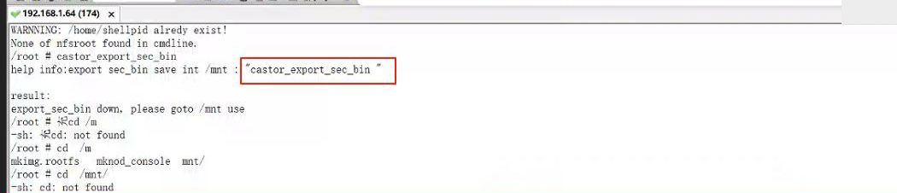
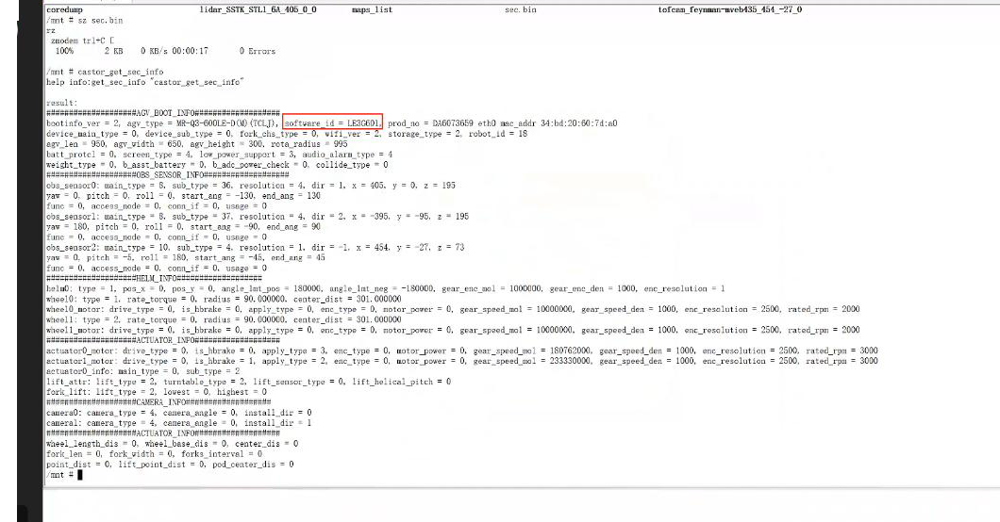
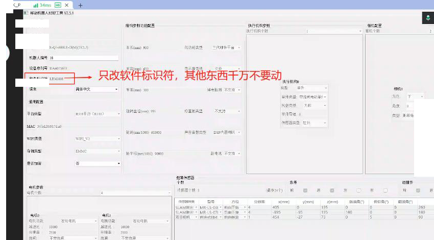
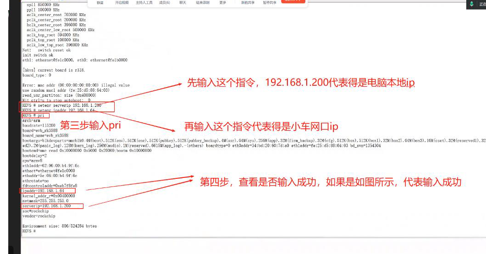
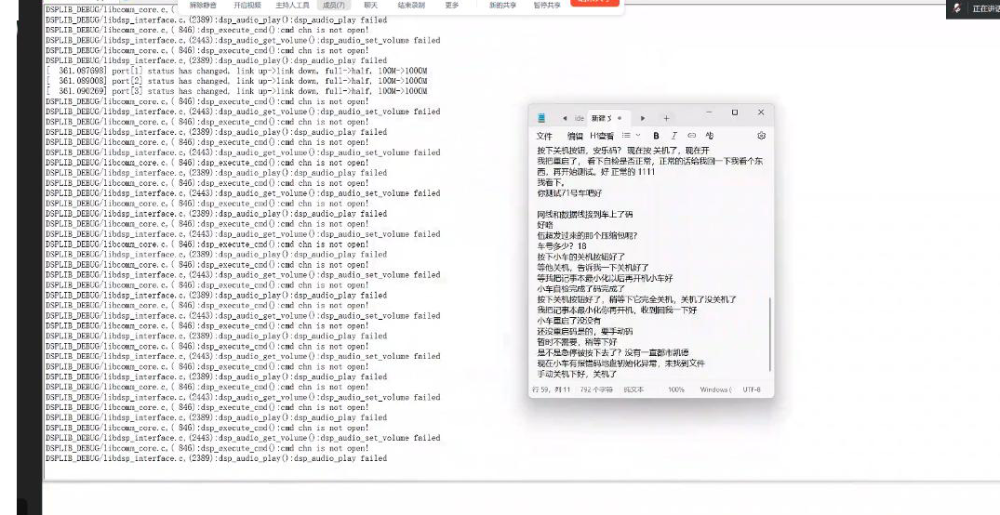

AGV 加密文件修改与导入刷写流程（软标定制）
现场定制、改制时需要修改小车软件标识符（软标）并刷入对应的加密文件 sec.bin。本篇按操作手册的完整步骤整理：从导出与校验、用加密工具改软标、准备 TFTP 与串口，到 U-Boot 刷写与重启验证，并标出每一步的判断依据和易错点。
实施部署目录
本篇为基于厂商操作手册的原创整理，只提炼流程与判断方法，不复制原文；不同版本与控制器存在差异，结论请结合现场验证使用。
适用范围与前置准备
当现场存在定制、改制需求时，需要把小车当前的加密文件（sec.bin）中的软件标识符（软标）改成目标值，再把改好的文件刷回小车。整个过程分两个阶段：
- 修改加密文件：导出 sec.bin → 用加密工具改软标 → 得到新的 sec.bin；
- 导入加密文件：通过 TFTP + 串口 U-Boot，把新的 sec.bin 刷入小车并重启验证。
如现场还需先升级属性文件，请在修改加密文件之前完成。
物料准备：一根 Type-C 线、一根网线，以及加密工具、Tftpd32、SecureCRT（串口终端）。
① 加密文件不能混用：不同软标对应的 sec.bin 不可交叉刷写；②修改前、修改后的 sec.bin 都必须备份，这是回滚的唯一依据。
阶段一 · 导出并校验加密文件
先从小车导出当前加密文件，并确认当前软标是否符合预期，作为改前基线。
- 登录小车，执行
castor_export_sec_bin，加密文件sec.bin会在mnt目录下生成。 - 进入
mnt目录，执行sz sec.bin，把文件下载到本地电脑（Windows 下会弹出保存位置）。 - 执行
castor_get_sec_info，查看当前软标是否为预期值（手册示例为LE3G601，各现场以实际为准）。确认无误后再继续。

castor_export_sec_bin 后进入 mnt，用 sz sec.bin 下载到本地。点击图片可查看原图。
castor_get_sec_info 的输出：核对软标字段，确认与现场要求一致。阶段一 · 用加密工具修改软件标识符
用专用加密工具改 sec.bin 中的软件标识符。除软标外，其他任何项都不要动。
- 在桌面新建文件夹
tftp，把下载好的sec.bin放进去。 - 双击运行
imx6_encrypto.exe，在弹出的机型选择中选 AGV-V1，点确定。 - 点右下角保存路径，选择 sec.bin 所在位置，例如
Desktop/tftp。 - 点登入：账号
admin，密码admin1234。 - 按界面从上到下的顺序依次操作，只把「软件标识符」改为目标软标（手册示例
LE3G808；以产品经理、项目经理提供的软标为准）。 - 保存后，
tftp文件夹里的 sec.bin 即为修改完成版本。此时再备份一次（改前、改后各留一份）。

保存路径必须指向存放 sec.bin 的目录，选错目录会导致改完的文件写不到原处；登入失败多见于账号密码输错或工具未以管理员权限运行。
阶段二 · 准备 TFTP 推送目录
用 Tftpd32 作为 TFTP 服务器，把改好的 sec.bin 推送给小车的 U-Boot。
- 在桌面新建文件夹
tftpd，把tftp里修改完成的sec.bin复制进去。 - 把
Tftpd32.exe也放进tftpd文件夹，与 sec.bin 同目录。 - 确认小车与电脑用网线直连或处于同一网段，电脑网卡 IP 与后续
serverip保持一致。
阶段二 · 启动并配置 Tftpd32
- 双击运行
Tftpd32.exe。 - 点 Browse，选择 sec.bin 的存放目录，例如
Desktop/tftpd。 - 点第二行的下拉箭头，选择本机网卡 IP（手册示例
192.168.1.200，请以自己电脑实际 IP 为准）。 - 程序打开后保持运行，不要关闭，直到单台车的软标改完再关。
下拉框选错网卡（比如选了无线网卡或虚拟网卡）是 TFTP 拉取失败最常见的原因；此时 U-Boot 端会停在 TFTP... 直到超时。
阶段二 · 确认串口并用 SecureCRT 连接
- 打开 Windows「设备管理器」，展开端口，确认哪几个 COM 口是通的（手册示例为 COM5、COM6）。
- 打开 SecureCRT，分别对这两个 COM 口建立串口连接，参数统一为：
| 参数 | 取值 |
|---|---|
| 协议 Protocol | Serial |
| 波特率 Baud rate | 115200 |
| 数据位 / 校验 / 停止位 | 8 / None / 1（默认） |
| 流控 Flow control | 全部不勾选（RTS/CTS、XON/XOFF 均关闭） |
连接成功后，SecureCRT 左下角会显示绿色箭头，表示串口已打开。
阶段二 · 判断哪个是升级口
两个串口里只有一个能进 U-Boot，需要先区分 RCU 口和升级口。
- 观察两个终端的输出：持续打印 RCU 相关日志的那个口是 RCU 口，不能用于刷写；另一个即为升级口。
- 一般规律：编号较小的 COM 口是升级口（手册示例中 COM6 打印 RCU，因此 COM5 为升级口）。
- 如果两个口都不打印任何内容：保持连接，把小车关机再开机（按下关机键后不要立刻开机，过快上电可能烧板）。
- 若首次连接就已判断出升级口，可直接关机再开机进入下一步。
阶段二 · 进入 U-Boot 并刷写
- 在 SecureCRT 中只保留升级口的连接（手册示例为 COM5）并保持打开。
- 按下关机键，稍等后再按开机键；开机后立即、连续地按
Ctrl+U，直到屏幕出现HKVS提示符。错过窗口就重新开关机再试。 - 在
HKVS下依次输入两条地址指令（serverip 必须是电脑本地 IP，ipaddr 是小车侧地址，不要写反）：
setenv serverip 192.168.1.120
setenv ipaddr 192.168.1.64- 输入
go回车，等待 TFTP 拉取并写入加密文件；成功会打印Success。 - 确认
Success后输入reset重启小车。

setenv 配置地址，go 执行刷写，成功后 reset。图中 IP 为手册示例，请替换为现场实际地址。阶段二 · 重启后验证
reset后终端会持续打印启动日志，等待小车完成启动。- 上线运行，观察定制功能是否生效（手册示例为转向灯、降低举升盘高度，各现场不一致）。
- 若长时间没有重启，手动按关机键再开机；重启完成后再次执行
castor_get_sec_info。 - 软标显示为目标值（示例
LE3G808）即代表修改成功；仍为旧值则回到阶段一检查 sec.bin 是否改对、是否刷入了正确目录下的文件。

castor_get_sec_info，核对软标是否已变更为目标值。收尾与注意事项
- 本台车所有步骤完成后，关闭
Tftpd32.exe与imx6_encrypto.exe，再开始下一台车，避免多台车串用。 - 加密文件不能混用；改前、改后的 sec.bin 都要备份留存。
- 用加密工具时只改软件标识符，其他参数一律不动。
- 关机后不要立即开机，过快上电可能烧板。
setenv的 serverip 与 Tftpd32 所选网卡 IP 必须一致，写错会导致拉取失败。Ctrl+U要在开机后尽早连续按下，HKVS窗口很短，错过需重新开关机。- 软标以产品经理 / 项目经理提供的值为准，本篇出现的软标、IP 均为手册示例。
上线前核对
- 已用 castor_get_sec_info 确认改前软标，并明确目标软标来源
- 改前 sec.bin 与改后 sec.bin 均已备份，未与其他软标混放
- imx6_encrypto 中只修改了「软件标识符」，其余参数未动
- tftpd 目录内同时包含改后的 sec.bin 与 Tftpd32.exe
- Tftpd32 已 Browse 到正确目录，并选中本机实际网卡 IP，全程未关闭
- 串口参数为 Serial / 115200 / 无流控，且确认哪个口是升级口（非 RCU 打印口）
- setenv serverip 与 ipaddr 填写正确，go 返回 Success，reset 后正常启动
- 重启后 castor_get_sec_info 显示目标软标，定制功能上线验证通过
- 单台车完成后已关闭 Tftpd32 与加密工具，再进入下一台